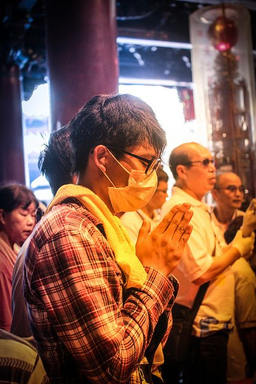
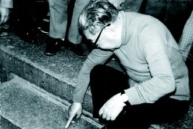
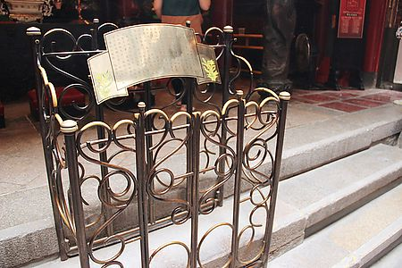

北港朝天宮俗稱北港媽祖廟，位於台灣雲林縣北港鎮中山路178號，是一座主要奉祀媽祖的廟宇，並已被列為中華民國國定古蹟。
朝天宮也為目前台灣最具影響力分靈眾多的媽祖廟之一， 清康熙三十三年(西元1694年)，樹璧和尚自湄洲嶼朝天閣奉請媽祖來台，航途中遇暴風雨漂流至笨港(今北港)，樹璧和尚認為此為神意，遂將媽祖奉祀於笨港街，建天妃廟，後改名天后宮，再改今朝天宮。
據說樹壁和尚將媽祖神像請至北港後，曾在一處古井上休息，也暫時將媽祖神像安置於古井上，不過後來當樹壁和尚要動身離開時，媽祖神像卻再也搬不動。後來經過請示，得知媽祖欲在此地建廟，而造就了今日的朝天宮。傳說今朝天宮正殿媽祖正下方，即為當年古井所在。
朝天宮建築屋頂為重脊飛簷，內部依序為三川殿，奉祀中壇元帥、虎將軍；正殿奉祀媽祖；中殿中室主祀觀音菩薩，從祀十八羅漢；東為三界公殿奉祀有三官大帝，從祀月下老人；五文昌夫子殿奉祀文昌帝君；後殿中堂是聖父母殿，奉祀媽祖的父母雙親和其兄姊妹；左廂有註生娘娘殿，奉祀註生娘娘；右廂是雙公殿，奉祀土地公和境主公；後殿左室為開山堂，奉祀歷代住持其祿位。

臺灣農曆三月期間，各地迎媽祖活動非常頻繁盛況非常，而在北港這個古鎮中更能體會到此股熱誠，對於北港人這更是一場年度盛會。
北港每年農曆三月十九當天，家家戶戶大都會用辦桌的方式，邀請遠方親友來共享用美食！同時當廟口繞境隊伍出發後，北港街頭鞭炮聲四起，大家便知道遶境已經開始了！沿路每戶都會準備好香案，水果和金爐恭迎媽祖聖駕。從農曆十九當天至二十三日媽祖聖誕當天，也將會伴隨著真人藝閣遊行，這在別處是很少見的。



孝子釘是朝天宮的一個廣為人知的故事，在清朝康熙年間，有個被後人稱作「蕭孝子」，跟他的母親一起從唐山來台灣找尋父親，在渡海的過程中母親卻被大浪沖走，到台灣尋找父親與母親。
當他到了笨港的媽祖廟，向廟裡的媽祖祈求能早日找到他的父母親，他看到地上有一根粗的鐵釘，於是他便向媽祖請求如果能找到他的父母，就讓這根鐵釘能釘入花崗岩之中，他徒手將鐵釘往地上釘去，鐵釘應聲釘入堅硬的花崗石中。
消息很快的傳遍了笨港，許多人紛紛幫他打聽他的父母的下落。終於在麥寮找到了他的母親，隨後在鹿港找到了父親。目前孝子釘就在北港朝天宮觀音殿前面的石階中央。